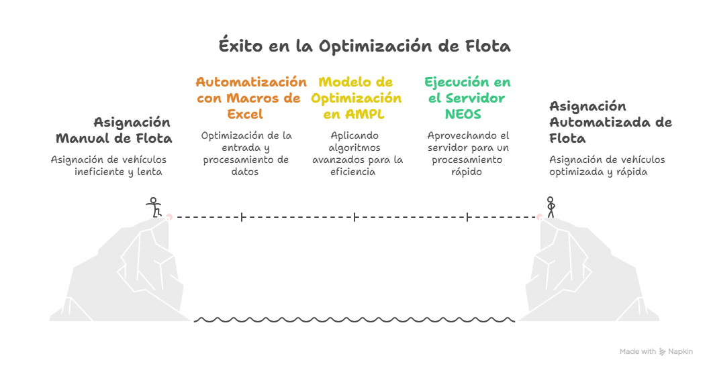
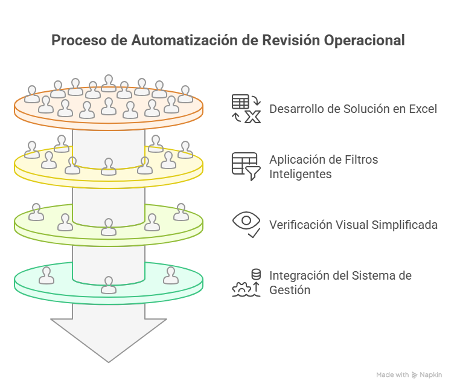
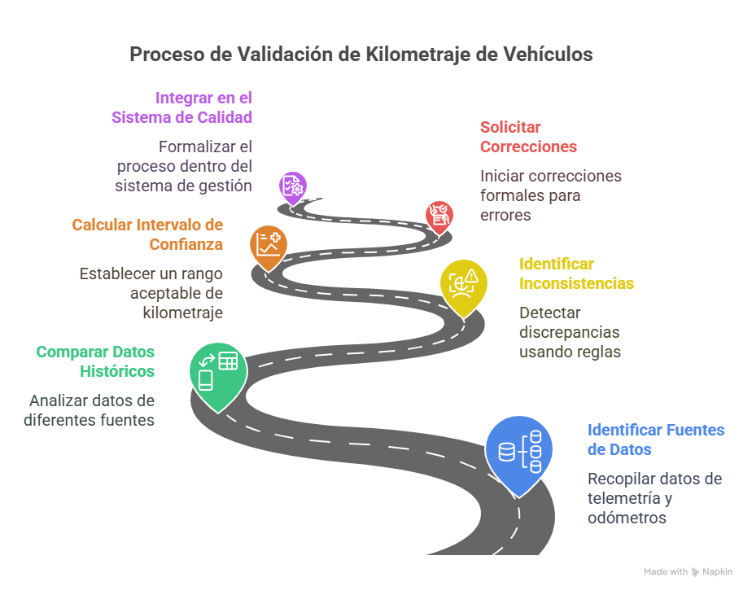

Casos de Éxito
🚛 Optimización de Flota en Transporte
Antes: La empresa asignaba manualmente más de 100 vehículos al día sin garantía de eficiencia.
Ahora: Automatización con Excel + AMPL en NEOS Server en solo 5 minutos.
- Vehículos confiables en rutas exigentes
- Reducción del 15% en kilometraje innecesario
- Mejora en cumplimiento y toma de decisiones

📝 Automatización de Revisión Operacional
Se automatizó el cruce de listas de chequeo operativas usando Excel y Visual Basic.
- Reducción del tiempo de revisión en 50%
- Archivo global para seguimiento
- Mayor confiabilidad en novedades

🚦 Control de Disponibilidad Vehicular
Solución con Google Forms + Sheets sin software costoso.
- Dashboard operativo en tiempo real
- Mayor visibilidad operativa
- Sin costo de licencias

📊 Seguimiento del Odómetro en Flota
Validación entre fuentes de datos y telemetría para garantizar registros fiables.
- Identificación de inconsistencias
- Intervalos de confianza por patrón
- Proceso transversal en calidad y mantenimiento
